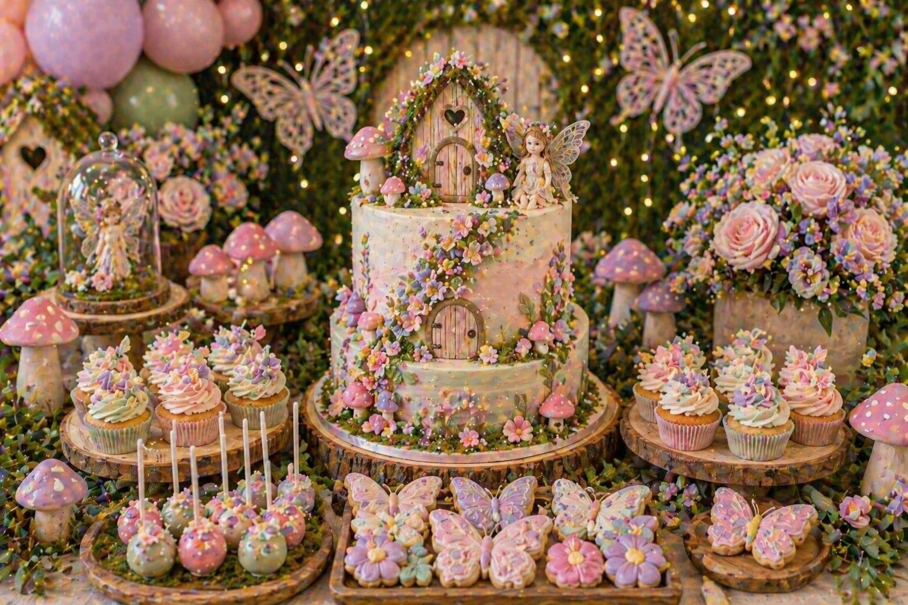
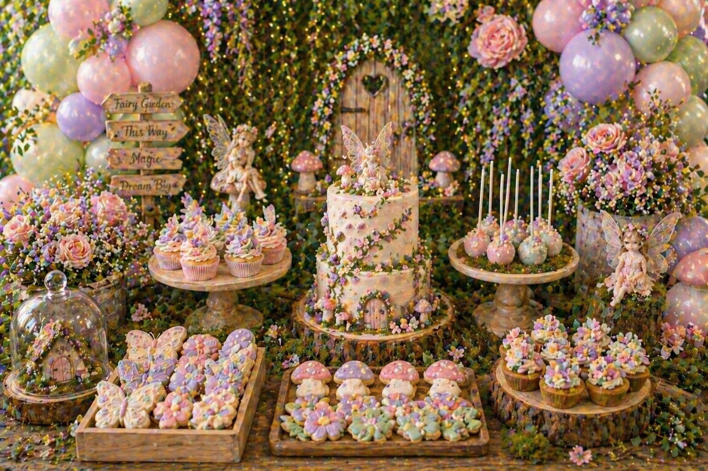

A fairy party is a beautiful children's birthday theme filled with soft colours, flowers, butterflies, toadstools, woodland details and magical little finishing touches. With pastel balloon garlands, a fairy garden cake, flower cupcakes and butterfly cookies, the dessert table can become the main feature of the whole celebration.
At Little Moment Studio, our focus is balloon styling and celebration setups. We do not make cakes or cupcakes ourselves, but we know how important the dessert table is to the overall party look. This guide covers fairy party inspiration — colour palettes, balloon ideas, three styling approaches and sweet treat ideas that work beautifully together.
If you would like cupcakes or a cake to complement your balloon display, we are happy to recommend a trusted local cake maker.
Why Fairy Parties Are So Popular
Fairy parties work beautifully because they feel soft, magical and timeless. The theme suits a wide range of ages and occasions — children's birthdays, first birthdays, garden parties and spring or summer celebrations all lend themselves naturally to the fairy aesthetic.
| Element | Fairy Party Inspiration |
|---|---|
| Balloon garland | Blush, lilac, sage, ivory, cream and soft gold |
| Cake | Fairy garden cake, woodland cake or flower-covered cake |
| Cupcakes | Flower cupcakes, toadstool cupcakes or pastel swirls |
| Cookies | Butterflies, flowers, fairy doors, stars and toadstools |
| Cake pops | Pastel cake pops, flower pops or woodland-style pops |
| Backdrop | Fairy door, garden wall, flowers, moss or twinkle lights |
| Props | Toadstools, moss, wooden stands, fairy doors and butterflies |
| Table styling | Soft florals, rustic trays, greenery and pastel details |
The best fairy tables feel magical without becoming too busy. The key is choosing four to six soft colours and repeating them consistently across every element — the balloons, cake, cupcakes, cookies, florals and props should all belong to the same colour story.
Fairy Party Colour Palettes
Start with the colour palette before choosing the balloons, cake or sweet treats. For most fairy parties, soft pastels work best — they create the magical, dreamy feel that makes this theme so appealing, and they photograph beautifully in natural light.
Pastel Fairy Garden
Blush, lilac, sage and ivory. Soft, magical and timeless.
Woodland Fairy
Moss green, sage, cream and blush. Earthy and enchanted.
Butterfly Fairy
Lilac, pink, mint and pearl white. Light, airy and delicate.
Luxury Fairy
Ivory, champagne, blush and soft gold. Refined and elevated.
Idea 1: Fairy Garden Dessert Table
A fairy garden dessert table is the classic version of this theme and the strongest all-round direction. It combines pastel colours, flowers, butterflies, mossy details and woodland-style props in one cohesive magical display. This is the version that reads most clearly as a fairy party from across the room, because every element reinforces the same enchanted garden feel.
| Element | Fairy Garden Table Idea |
|---|---|
| Balloon garland | Blush, lilac, sage and ivory with soft gold accents |
| Backdrop | Fairy door panel, garden wall or floral balloon backdrop |
| Cake | Woodland fairy cake with fairy door and toadstool details |
| Cupcakes | Flower cupcakes and toadstool cupcakes on a tiered stand |
| Cookies | Butterflies, flowers, fairy doors and toadstool cookies |
| Cake pops | Pastel flower cake pops grouped in a small rustic stand |
| Props | Toadstools, fairy doors, moss, wooden stands and soft florals |
| Sweet jars | Pearl sweets and pastel confections in glass jars |
This table works best when the props are used with restraint. Fairy tables can easily become overcrowded when every item is small and detailed — a few strong props (a fairy door, two or three toadstools, some moss and soft florals) will always look better than a table where every surface is covered.
Balloon tip
For a fairy party garland, use blush and ivory as the main base balloon colours, then add lilac and sage as accents. Avoid using equal quantities of all four colours — a dominant pale tone with supporting accent colours gives the garland a more premium, considered look. Small pearl or champagne balloons woven in add a subtle magical shimmer without introducing a new colour to the palette.
Idea 2: Woodland Fairy Cake & Cupcake Display

Woodland fairy cake and cupcake display styled by Little Moment Studio, Sittingbourne — fairy door cake, toadstool details, flower cupcakes and mossy props
A woodland fairy cake and cupcake display gives the birthday cake the starring role. The cake — with its fairy door, toadstool details and soft florals — becomes the unmistakable centrepiece, and the cupcakes grouped around it reinforce the same woodland palette. This works especially well when the cupcakes pick up two or three of the exact colours from the cake rather than introducing new tones.
| Element | Woodland Fairy Cake Display Idea |
|---|---|
| Cake | Fairy door cake with toadstool details, moss and soft florals |
| Cupcakes | Flower cupcakes and toadstool cupcakes on a tiered wooden stand |
| Cookies | Butterfly and flower cookies at the base of the stand |
| Cake pops | Pastel flower pops or moss-green pops on a small stand |
| Cake stand | Natural wood or cream tiered stand with moss or leaf details |
| Balloon garland | Moss green, sage, cream and blush garland above the table |
| Props | Fairy door, toadstools and soft greenery beside the cake stand |
Good cupcake styles for a woodland fairy display:
| Cupcake Style | Best For |
|---|---|
| Flower cupcakes | Floral fairy garden theme |
| Toadstool cupcakes | Woodland fairy styling |
| Pastel swirl cupcakes | Soft party table filler |
| Butterfly topper cupcakes | Butterfly fairy theme |
| Leaf cupcakes | Garden and woodland detail |
| Sage and cream cupcakes | Softer woodland fairy look |
For more cupcake ideas, see our birthday cupcake ideas guide.
Idea 3: Floral Fairy Treat Table

Floral fairy treat table — flower cupcakes, butterfly cookies, toadstool treats, pastel cake pops and soft balloon styling
A floral fairy treat table puts the focus on small details and delicate sweet treats rather than one large centrepiece cake. Flower cupcakes, butterfly cookies, toadstool treats, cake pops and pastel sweet jars arranged at different heights across a display of rustic wooden stands create a layered, garden-inspired look that feels full of detail without being overwhelming.
| Element | Floral Treat Table Idea |
|---|---|
| Cupcakes | Flower cupcakes in blush, lilac and sage arranged on a tiered stand |
| Cookies | Butterfly, flower and fairy door cookies in matching pastel icing |
| Cake pops | Pastel flower cake pops displayed upright in a small stand |
| Sweet jars | Pearl sweets, pastel confections and flower-shaped sweets in glass jars |
| Props | Toadstools, moss, butterfly decorations and soft florals |
| Stands | Wooden crates and rustic trays at varied heights |
| Balloon garland | Soft blush and lilac cluster above the table or along the backdrop |
Styling tip
On a treat-focused table, height variation is what makes the display feel designed rather than flat. Place the tallest element — a cake pop stand or a small tiered stand of cupcakes — slightly off-centre, then build outward with lower items. A fairy door leaning against the back of the table at one side adds a magical detail that draws the eye without taking up serving space.
Idea 4: Butterfly Fairy Party Table
A butterfly fairy table gives the theme a lighter, more airy quality. Lilac, pink, mint and pearl white balloons create a soft pastel backdrop, while butterfly-shaped cookies, butterfly cake toppers and pearl sprinkle details on the cupcakes reinforce the delicate feel. This version works especially well for spring parties or garden celebrations where you want the table to feel gentle and pretty rather than woodland-rustic.
Idea 5: Toadstool Woodland Fairy Table
A toadstool woodland fairy table is a more playful version of the theme, leaning into the mushroom and woodland details rather than the flower garden. A toadstool birthday cake, mushroom-style cupcakes, leaf and flower cookies, rustic stands and mossy props create a charming enchanted forest display. Sage, blush, cream and soft brown balloons keep the palette grounded and earthy, while fairy doors and moss add the magical layer that makes the theme feel special.
Idea 6: First Birthday Fairy Table
A fairy theme softens beautifully for a first birthday. Use blush, ivory, sage and cream rather than stronger lilac or moss tones, and keep props minimal — a small fairy door, two or three toadstools and some soft florals are enough. A fairy cake with a number one topper, flower cupcakes in soft pinks and creams, and butterfly cookies create a gentle, photo-ready table without being overwhelming. For more first birthday ideas, see our first birthday balloon ideas guide.
What to Include on a Fairy Dessert Table
A fairy dessert table can be as simple or as full as the size of the party requires. Start with the cake and cupcakes, then build out with cookies, cake pops and sweet jars. Props fill the remaining visual space without adding more food than guests can eat.
| Treat | Fairy Party Idea |
|---|---|
| Birthday cake | Fairy garden cake, woodland cake, floral cake or toadstool cake |
| Cupcakes | Flower cupcakes, toadstool cupcakes or pastel swirl cupcakes |
| Cookies | Butterflies, flowers, fairy doors, toadstools and star shapes |
| Cake pops | Pastel flower pops, toadstool pops or pearl cake pops |
| Macarons | Blush, lilac, sage, ivory or soft gold tones |
| Sweet jars | Pearl sweets, pastel confections or flower-shaped sweets |
| Meringues | Soft pastel meringues for texture and height variation |
| Mini desserts | Small pots with flower, butterfly or fairy toppers |
For practical advice on arranging the table layout, see our guide to how to style a dessert table for a children's party. For help matching the sweet treats to your balloon palette, see our guide on how to match cupcakes with your balloon display.
Fairy Party Cupcake Ideas
Cupcakes are ideal for fairy parties because the small individual details — a piped flower, a fondant butterfly, a toadstool topper — can repeat the magical theme across the whole display. Mixing flower cupcakes and toadstool cupcakes on the same tiered stand means both the garden and woodland sides of the theme are visible at once.
| Cupcake Style | Best For |
|---|---|
| Flower cupcakes | Floral fairy garden theme — the most versatile fairy cupcake |
| Toadstool cupcakes | Woodland fairy styling with fondant toadstool toppers |
| Pastel swirl cupcakes | Easy filler cupcakes that stay within the fairy palette |
| Butterfly topper cupcakes | Smooth buttercream base with fondant or wafer butterfly detail |
| Leaf cupcakes | Garden and woodland styling with leaf-tip piping |
| Fairy wing cupcakes | Wafer paper wings pressed into buttercream for a magical effect |
| Pink and lilac cupcakes | Classic fairy palette filler |
| Sage and cream cupcakes | Softer woodland fairy look |
Useful piping tips for fairy party cupcakes:
| Effect | Tip |
|---|---|
| Tall swirl | Wilton 1M open star |
| Rosette swirl | Wilton 2D closed star |
| Grass and moss texture | Wilton 233 grass tip |
| Petals and ruffles | Wilton 104 petal tip |
| Leaves | Wilton 352 leaf tip |
| Small dots and details | Wilton 3, 4 or 12 round tip |
For a fuller guide to piping tips and techniques, see our best piping tips for cupcakes guide.
Fairy Party Balloon Ideas
The balloon display creates most of the visual impact around the dessert table. For a fairy party, the palette should feel soft and dreamy — bold or saturated colours will undermine the magical quality that makes this theme so popular.
| Theme | Balloon Colours |
|---|---|
| Pastel fairy garden | Blush, lilac, sage and ivory |
| Woodland fairy | Moss green, sage, cream and soft blush |
| Floral fairy | Pink, lilac, ivory and pastel yellow |
| Butterfly fairy | Lilac, pink, mint and pearl white |
| Luxury fairy | Pearl white, champagne, blush and sage |
| First birthday fairy | Blush, ivory, sage and soft gold with number balloon accent |
For balloon packages and availability across Sittingbourne and Kent, see our birthday balloon styling page and balloon garlands page.
Matching Balloons, Cake & Cupcakes
The desserts do not need to match the balloons exactly — they just need to feel like part of the same colour story. Choose the same three or four tones and repeat them across every element for a cohesive, designed result.
| Balloon Palette | Cake & Cupcake Idea |
|---|---|
| Blush, lilac, sage | Fairy garden cake, flower cupcakes, butterfly cookies |
| Sage, cream, brown | Woodland cake, toadstool cupcakes, leaf cookies |
| Pink, ivory, gold | Floral cake, pink cupcakes, pearl cake pops |
| Lilac, mint, pearl | Butterfly cookies, pastel cupcakes, soft flower cake pops |
| Blush, ivory, sage | First birthday fairy cake with number one topper and flower cupcakes |
For more help choosing a colour palette across the whole celebration, see our guide to how to choose a colour palette for your balloon display.
Your Questions Answered
What colours work best for a fairy party?
Blush pink, lilac, sage green and ivory are the most popular fairy party palette and work beautifully for most ages. They feel soft, magical and cohesive without being overwhelming. For a woodland fairy look, add moss green and soft brown. For a butterfly fairy version, lilac, pink and mint create a lighter, more airy feel. For a luxury fairy table, ivory, champagne and soft gold alongside blush feels elevated and refined. Pick four to six soft colours and repeat them consistently across every element.
What balloons should I use for a fairy party?
A blush, lilac, sage and ivory balloon garland is the most versatile fairy party combination. The soft pastel tones create a dreamy, magical backdrop without any single colour dominating. For a woodland fairy version, swap ivory for cream and add moss or deeper sage. For a butterfly fairy theme, lilac, pink and mint with pearl white feel light and airy. For a first birthday fairy display, blush, ivory and soft gold with a number balloon accent creates a gentle, photo-ready result.
What cupcakes work well for a fairy party?
Flower cupcakes are the most popular fairy party cupcake choice because they tie into both the garden and magical elements of the theme. They can be piped using the Wilton 1M for a swirl or the Wilton 104 petal tip for ruffled flowers in blush and lilac. Toadstool cupcakes add a woodland detail that works well mixed with flower cupcakes on the same tiered stand. Butterfly topper cupcakes on smooth pastel buttercream are an easy option that requires minimal piping skill. See our best piping tips guide for more detail.
What should I include on a fairy party dessert table?
A strong fairy party dessert table includes a fairy garden or woodland cake as the centrepiece, twelve to twenty-four flower or toadstool cupcakes, butterfly and flower cookies, pastel cake pops, sweet jars in matching colours and fairy-themed props such as toadstools, fairy doors and moss. A blush, lilac, sage and ivory balloon garland framing the backdrop creates most of the visual impact. Wooden stands, rustic crates and soft florals fill the table without making it feel cluttered.
Can a fairy party work for a first birthday?
Yes — a fairy theme is one of the most popular first birthday choices because the soft colours and gentle woodland details feel appropriate for a very young child. For a first birthday fairy table, use blush, ivory, sage and cream rather than stronger lilac or moss, and keep props minimal. A fairy cake with a number one topper, flower cupcakes and butterfly cookies create a beautiful table without being overwhelming. See our first birthday balloon ideas guide for more inspiration.
Whether you choose the full fairy garden approach with blush, lilac, sage and butterfly details, a woodland fairy display built around a fairy door cake, or a softer first birthday version in cream and ivory, the key to a great fairy party table is consistency. When the balloons, cake, cupcakes, cookies and props all share the same colour language, the setup feels like a single magical world rather than a collection of separate elements.
For more children's party inspiration, see our guides to princess party dessert table ideas, unicorn party balloon and dessert table ideas and how to style a dessert table for a children's party.
Planning a Fairy Party in Sittingbourne or Kent?
Little Moment Studio creates beautiful balloon displays and celebration setups for children's birthdays across Sittingbourne and Kent. We can also recommend a trusted local cake maker to complete your fairy party dessert table.